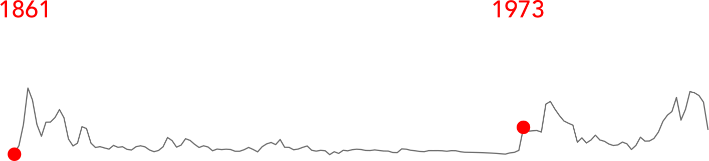
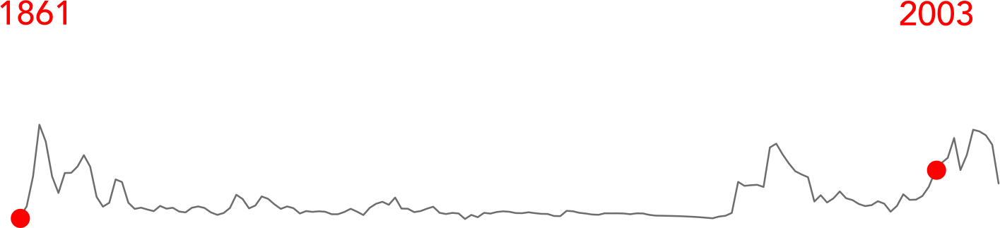

Before the Transcontinental Railroad was opened, the 30,000 miles travel from the Atlantic coast to the Pacific coast took 6 months to complete over land. After the opening the journey only took around 7 days (history.com, 2009). This made it possible for thousand of migrants to move to the West Coast, creating an increase in trade, business and population. It created the psychological effect of bringing the country together (The New York Times, 2012). This phenomena of getting closer together is the subject of this paper. This paper will research which technologies got people closer together in the past, and which technologies will do so in the future.
Before the Suez canal was opened ships had to go round the southern tip of Africa to go to the East Indies and Australia, this journey was 6,100 km longer than the new route via the Suez Canal (Suez Canal Authority, n.d.). Steamships were burned by the reliance on coal, the further it travel the more space it needs on board to store this coal. This made steamships more expansive than sailing vessels for long distance travels. Since sailing vessels had to use a tug to get through the canal, which was difficult and more expensive than going via Cape of Good Hope, the Suez canal was mainly used by steamships (Sichko, 2011). This gave a growth in the manufacturing in steamships to be used for long distances (MacGregor, 1983).
Due to several reasons more and more Europeans were chasing their dreams or last hopes by migrating to the United States. This immigration encourages the transition from sails to big steam ocean liners. With traditional sail ships the voyage will take 5 to 6 weeks, steam ships shortened this to less than 14 days. Steam made it possible for ships to get bigger and faster and thus to transport more and more people over the Atlantic (Cohn, 2005).
Most innovations in travel were only reserved for rich and famous at start, it takes time for the common people to take advantage of the decrease in travel time or extra luxury these innovations brought. The Orient Express was part of the Compagnie Internationale des Wagons-Lits (CIWL) it was the most international train route at it’s time by connecting 13 countries and the the journey from Paris to Istanbul lasted a little over 80 hours (Zax, 2007). For many the Orient Express was a byword for all that was most intriguing, romantic and mysterious about long-distance international train travel (Lambert, 2013).
The RMS Umbria was the last biggest ship with auxiliary sails. On delivery the RMS Umbria was the biggest ocean liner in the world (Cunard, n.d.). This ship still needed the auxiliary sails to cross the Atlantic Ocean, while using steam power as main source.
The Wright Brothers were the first to fly a heavier than air machine. They flew for 12 seconds and covered 36 meters on their inaugural flight (History.com, 2009).
The RMS Mauretania was on it’s delivery the biggest ocean liner in the world. Until 1911 it was the fastest ship in the world, it could maintain an average of 24 knots (44 km/h). This was made possible because it was the first big ship to use the new steam turbine technology (Maxtone-Graham, 1972).
Until the introduction of the Model T cars have been around for decades but the Model T was the first mass produced car in the world. Through changing manufacturing from garages to factory belts Henry Ford could reduce the price of the cars. This made it possible for middle-class Americans to buy a car. Until 1927 15 million Model T’s were manufactored (History.com, 2010).
The London General Omnibus Company (L.G.O.C.) B.-type motorbus was the first commercially mass produced bus (Explore 20th Century London, n.d.). These busses started replacing the omnibuses, which were still horse drawn.
The MS Selandia was the first big ship that no longer used coal and steam to move. After removing the sails, the chimneys were now also removed (MAN SE, n.d.). The ship was powered by a diesel engine, which was more efficient than coal. Experts calculated the motorship had a 40% advantage in fuel costs, with fewer crew and steadier sea speeds (Dickie, 1922).
At the start of World War I motor vehicles had yet to seriously threaten the railways, except for local traffic, while aviation was at an early stage. All armies needed to mobilise and move their soldiers and equipments to the battlefront, this drove innovation in transportation (Whitmore, n.d.).
Alcock and Brown were the first to cross the Atlantic in a plane. Planes were still troubled in their radius and reliability, they could only make short hops and would often crash. During their Atlantic flight Alcock and Brown had covered almost 3000 km in 15 hours and 57 minutes (Flank, 2015).
Imperial airway was a pioneer in surveying and opening up air routes across the globe, to serve the far-flung parts of the British Empire. Their mission was to make the Empire, and thus the world, feel that much smaller (Novak, 2013). The Empire routes needed major planning, and flying conditions (varying extremes of climate, etc) which until that point had not been regularly experienced (Imperial-airways.co.uk, n.d.). Just like most travel innovations, Imperial Airways mostly served the rich. It provided luxury in the form of a shorter travel time to far-away parts of British Empire. It reduced traveling to Australia from 42 days on a boat, to 11 days per plane (Novak, 2013).
Although the first transatlantic crossing by air may have taken part in 1919, it was not possible for passengers to cross the Atlantic by other means than a boat. This changed when the Graf Zeppelin made its first flight over the Atlantic. It took the Graf Zeppelin 111 hours and 44 minutes to cross the Atlantic (Grossman, 2015).
The military can be an important driver for innovation. During World War 2, both fronts drove innovations in transport. World War 2 was the first war were airplanes took a major role, it was therefore crucial to improve airplane technology to counteract your opponent. This meant that bombers could fly longer, with a bigger payload and even the jet engine was invented (Bowen and Rodrigue, 2013).
The first commercial line flights started after the Second World War when long runways where available. In January 1946 Pan Am's DC-4 was scheduled New York (La Guardia) to London (Hurn) in 17 hours 40 minutes, flying five days a week (Delta Flight Museum, n.d.).
Yuri Gargarin is the first man to enter outer space, making a 108-minute orbital flight in his Vostok 1 spacecraft (NASA, 2011).
The Shinkansen are regarded as the first commercial high speed bullet train. On its first yourney this train swiftly reached a top speed of 210 kph on a specially constructed line towards Osaka. The new 500 km route reduced the time required to travel between Japan's two largest cities from 6 hours and 30 minutes to 4 hours (Ryall, 2014).
Neil Armstrong was the first man on the moon after a 4 day trip on the Apollo 11. Only 10 persons have been on the moon since (Loff, n.d.).
The Boeing 747 was the first wide-body plane and was the biggest plane in the world until the Airbus A380 was released. Because of it’s size it was cheaper per passenger than a smaller plan when the plane was full. The Boeing 707 (predecessor to the 747) could carry up to 219 passengers. The first Boeing 747 could carry up to 550 passengers. The newest 747 can carry up to 605 passengers (van Hinte, n.d.).
The first major oil crisis started when America started helping Israel in the Arab-Israeli war. The Arab members of the Organization of Petroleum Exporting Countries (OPEC) started boycotting all supporters of Israel. The 1973 Oil Embargo immediately strained a U.S. economy that had grown increasingly dependent on foreign oil. The embargo contributed to an upward spiral in oil prices. The price of oil per barrel first doubled, then quadrupled, imposing skyrocketing costs on travelling for consumers (Office of the Historian, 2013).

The Concorde is the first passenger airplane able to go faster than sound (supersonic). It was able to reach a cruising speed of 2150 km/h (mach 2). Travel time between Londen and New York was reduced from 7 to 3.5 hours (British Airways).
Just like the Orient express almost 100 years ago the TGV started connecting France to other parts of Europe by rail. This time by high-speed rail and with prices affordable by the non-rich (SNCF, n.d.).
The GPS project was completed in 1993 when the 24th GPS satellite was put into orbit. In 1983 the Reagan Administration in the US decided to open up GPS for civilian use after a civilian plane was shutdown in foreign territory. This meant that aircraft, shipping, and transport the world over could fix their positions and avoid straying into restricted foreign territory (Mio, n.d.).
The first Eurostar train rides between the United Kingdom and France in the Channel Tunnel (Eurostar, n.d.). This meant that the travel time from London to Paris by train has been reduced to 2 hours and 15 minutes (Fowler, n.d.).
There was a strong growth in the demand for oil in 2003, mainly as a result of rapid economic growth in China and to a lesser extent the US. On the supply side, existing production facilities, transportation and refinery capacity could not meet this increased demand. At the same time, crisis events in Iraq, Saudi Arabia, Venezuela, Russia and Nigeria, together with four hurricanes in quick succession in the Gulf of Mexico, disrupted oil supplies and provoked panic on international markets (BBC News, n.d.). Just like the previous oil crisis this triggered innovations in alternative resources and less dependencies on fossil fuels.

The end of the Concorde could be seen as a major step back in innovation. Traveling was faster in the past than now. The Concorde was problem ridden. It was only profitable for long distance flights, and couldn’t fly supersonic over land due to noise restrictions. In practice this meant most flights would go between London/Paris and New York. Next to this it had high maintenance cost and used a lot of fuel. This meant with the rising fuel prices that the Concorde project was not profitable any more (Chan, 2013).
The second version of the Toyota prius becomes the first commercially successful hybrid electric car (Toyota, 2015).
Google Maps democratized maps. Digital and online maps existed before, but Google decided to crowd source the information on Maps. This means everybody is able to add data to maps (Ratliff, 2007). Everybody who knows how to program is also able to retrieve that data from Google Maps. More and more data sources are being added. For example public transport data makes it more easy to plan your next trip in Google Maps.
The Airbus A380 still is the biggest passenger airline on the market, it can took 550-800 passengers on every trip. The A380 is built around the assumption that airlines will continue to fly smaller planes on shorter routes (spokes) into a few large hubs, then onward to the next hub on giant airplanes. Boeing on the other hand puts his bet on the Point-to-Point model, hereby flights are flown more frequently, on smaller airplanes. The new Boeing 787 (‘Dreamliner’) offers a very different take on the flying experience. Focusing on comfort rather than perks that could be eliminated by airlines: more standing headroom, larger windows and bathrooms, and higher humidity. These features will benefit passengers regardless of seat configuration (Babej and Pollak, 2006).
The first Tesla Roadster is delivered to customers, this was the first of the new generation electric cars. Martin Eberhard said that "I couldn't bring myself to buy a car that got 18 miles to the gallon at a time when wars in the Middle East seemed to somehow involve oil and the arguments for global warming were becoming undeniable" when he started working on the first Tesla Prototype (Baer, 2016).
Google is the first one to start testing the new generation of self driving cars on public roads (Fisher, 2013). Since then all major car manufacturers have started their own autonomous driving cars programs.
Uber start offering taxi services in San Francisco. When the Uber beta started in San Francisco it was only possible to order limousines (UberXL). Later the normal taxi (UberX) was introduced as well. The major strong point of Uber is creating networks of cars in cities (Uber, n.d.).
Tesla pushes Autopilot with a software update, this software will accelerate, brake and steer for the driver, although the driver still needs to hold hands his on the wheel (Collie, 2015).
First google self driving cars will be available in limited countries due to legal restrictions. Google will not produce these cars themselves but will partner with the big car manufacturing companies (Reuters, 2016).
Shortly after the first releases of self driving cars, Uber will start using them in cities where they are legal. Uber sees the driver as an unwanted and costly expense, stating Uber CEO Travis Kalanick: “When there's no other dude in the car, the cost of taking an Uber anywhere becomes cheaper than owning a vehicle." (Newton, 2014).
Uber will start connecting all their hubs to form one giant network. Like in the past, new transportation network will first start locally and will later be connected to form a giant network. To connect their network Uber will buy a major airline company, and starts to connect their biggest hubs to the network. Uber won’t be the cheapest player in the market but they will be the easiest, quickest and luxurious one.
The main reason for the abandonment of supersonic flights was the cost of maintaining the fleet of concordes and the fact that a concorde can only go supersonic above the ocean. This is due to the noises and shock wave it generates when going faster than sound (mach 1). NASA is restarting their research into supersonic airplanes with ‘project quesst’ (NASA, 2016) with the intention of making them less noisy, so they can safely be used over land as well. To prove that the next generation of supersonic airliners are safe for use over land, the first flight will go from New York to San Francisco.
It will take a while longer for busses to be driver free, it will take more legislation changes than the self driving passenger car. The form of the bus will probably change. The human driver was a bottleneck for the bus. Busses can now be smaller, while still being profitable. They can also be longer, a computer is better capable of maneuvering a long object through the streets. This means that the train of the future, could be a bus.
People no longer see the need for having a car. Only 20% of America will own a car, while currently 43% owns a car (Hars, 2014). Car ownership will be impractical in cities, it takes expansive space while your car for most part of the day is not being used. The car will therefore become a rural vehicle, connecting parts of the world that are less connected to transportation hubs. The future of ownership will therefore be usership.
While Virgin Galactic has been taking ultra rich passengers to space for a longer time, Virgin Galactic will now start taking passengers into space for a reasonable prices (Moody, 2016). These voyages will only be for touristic purposes, it is not possible yet to use this as a method of going from A to B.
The first hyperloop track will be made between Los Angeles and San Francisco. The Hyperloop will replace the train as we know it. The train tracks will be replaced by a vacuum tunnel therefore the shuttle will be frictionless. Theoretically it can reach speeds up to 1,220 km/h (Mach 0.99), this means going from Los Angeles to San Francisco will take you roughly 30 minutes (SpaceX, 2013).
Previous oil crises have shown that we can no longer be reliable on oil for transportation. This gave rise to more efficient cars and finally we got rid of the combustion engine in cars. These electric cars have one major disadvantage, they need batteries to move. Batteries need recharging, which limits their distance. On the other side we can’t save the green energies from sun and wind. The supply of those energy sources are not consistent, therefore not reliable enough to use as our only power supply. We will still need backup power sources, unless we are using all those batteries inside of electric vehicles as one giant battery. Singapore will be the first one to replace all their roads with these smart roads.
Spaceliner starts with flying rockets to destinations on earth. These suborbital flights will be much quicker as normal aviation and is able to go from London to Sydney in 90 minutes (Prigg, 2015). Unlike Virgin Galactic, the SpaceLiner can take up to 100 passengers and will therefore be able to drop the prices low enough to be seen as a new method of transport. Virgin Galactic was only for entertainment, SpaceLiner will be able to get travellers from A to B.
Travel innovations have mostly come from serving the needs of the rich and manous at first, while later becoming available in a cheaper and less luxurious form for the middle and lower class. Travel really started when people started migrating from Europe. International traveling is something entwined with Western capitalism, people migrate to chase their dreams, go on a business trip or just go on vacation to an exotic island. On the map you can clearly see most innovations happened in the Western part of the world. You can see a shift from London as the most important part of the world, to San Francisco taking over in the digital age.